algae-bloom-plate-count-verify FAIL 0
apps thunderbird + gimp + os
Could you please settle the question my colleague raised in the newest message sitting in my inbox? She doubts the colony figure quoted for the second plate. Check it against the plate photo she points to, then reply to her saying whether the quoted number holds, with the count you actually get and how you got it. Please also leave the annotated plate image she asked for in the same folder as the photo.
task config + evaluator
{
"config": [
{
"type": "execute",
"parameters": {
"command": "mkdir -p /home/user/lab/plates /home/user/.thunderbird/tbprof/Mail/Local\\ Folders && python3 -c \"\nfrom PIL import Image, ImageDraw\nimport random\nrandom.seed(7)\nfor name,n in [('plate_a.png',24),('plate_b.png',31)]:\n im=Image.new('RGB',(700,700),(238,232,214))\n d=ImageDraw.Draw(im)\n d.ellipse([30,30,670,670],fill=(214,226,204),outline=(120,120,110),width=6)\n pts=[]\n while len(pts)<n:\n x=random.randint(90,610); y=random.randint(90,610)\n if (x-350)**2+(y-350)**2>250**2: continue\n if any((x-a)**2+(y-b)**2<1300 for a,b in pts): continue\n pts.append((x,y))\n for x,y in pts:\n r=random.randint(9,14)\n d.ellipse([x-r,y-r,x+r,y+r],fill=(60,92,58))\n im.save('/home/user/lab/plates/'+name)\n\" && python3 -c \"\nimport os,time\np='/home/user/.thunderbird/tbprof/Mail/Local Folders'\nbody='''Hi,\n\nI finished scoring the Lake Merritt algae samples this morning. For the record I am logging plate A at 24 colonies and plate B at 27 colonies, and the second one is the number I am not sure about -- I counted it twice and got different answers both times.\n\nThe scans are on the workstation under lab/plates (plate_a.png and plate_b.png). Please recount plate B off the image and tell me if 27 stands. If it does not, send me the number you get and say how you counted.\n\nIt would also help if you dropped an annotated copy of the plate B scan next to the original, with every colony you counted visibly marked, so I can see your work before I lock the run sheet.\n\nThanks,\nPriya Raghavan\nAquatic Ecology Lab'''\nmsg='From - Mon Apr 15 08:41:00 2024\\nFrom: Priya Raghavan <p.raghavan@merrittlab.org>\\nTo: user@merrittlab.org\\nSubject: Plate B count -- can you double-check 27?\\nDate: Mon, 15 Apr 2024 08:41:00 -0700\\nMessage-ID: <plateb-0415@merrittlab.org>\\nContent-Type: text/plain; charset=UTF-8\\n\\n'+body+'\\n\\n'\nold='From - Fri Apr 12 16:02:00 2024\\nFrom: Dan Okafor <d.okafor@merrittlab.org>\\nTo: user@merrittlab.org\\nSubject: Autoclave booked Thursday\\nDate: Fri, 12 Apr 2024 16:02:00 -0700\\nMessage-ID: <auto-0412@merrittlab.org>\\nContent-Type: text/plain; charset=UTF-8\\n\\nThe big autoclave is reserved Thursday morning for the sediment run. Plan glassware around it.\\n\\nDan\\n\\n'\nopen(os.path.join(p,'Inbox'),'w').write(old+msg)\nopen(os.path.join(p,'Inbox.msf'),'w').write('')\n\" && python3 -c \"\nimport os\nos.makedirs('/home/user/.thunderbird',exist_ok=True)\nopen('/home/user/.thunderbird/profiles.ini','w').write('[Profile0]\\nName=default\\nIsRelative=1\\nPath=tbprof\\nDefault=1\\n\\n[General]\\nStartWithLastProfile=1\\n')\nopen('/home/user/.thunderbird/tbprof/prefs.js','w').write('user_pref(\\\"mail.account.account1.server\\\", \\\"server1\\\");\\nuser_pref(\\\"mail.accountmanager.accounts\\\", \\\"account1\\\");\\nuser_pref(\\\"mail.accountmanager.defaultaccount\\\", \\\"account1\\\");\\nuser_pref(\\\"mail.account.account1.identities\\\", \\\"id1\\\");\\nuser_pref(\\\"mail.identity.id1.useremail\\\", \\\"user@merrittlab.org\\\");\\nuser_pref(\\\"mail.identity.id1.fullName\\\", \\\"Sam Ortiz\\\");\\nuser_pref(\\\"mail.server.server1.type\\\", \\\"none\\\");\\nuser_pref(\\\"mail.server.server1.name\\\", \\\"Local Folders\\\");\\nuser_pref(\\\"mail.server.server1.directory-rel\\\", \\\"[ProfD]Mail/Local Folders\\\");\\nuser_pref(\\\"mail.server.server1.hostname\\\", \\\"Local Folders\\\");\\nuser_pref(\\\"mail.server.server1.userName\\\", \\\"nobody\\\");\\nuser_pref(\\\"mail.startup.enabledMailCheckOnce\\\", true);\\nuser_pref(\\\"mailnews.start_page.enabled\\\", false);\\n')\n\"",
"shell": true
}
},
{
"type": "launch",
"parameters": {
"command": [
"thunderbird"
]
}
}
],
"evaluator": {
"func": "check_include_exclude",
"result": {
"type": "vm_command_line",
"command": "echo ostg-v16",
"shell": true
},
"expected": {
"type": "rule",
"rules": {
"include": [
"__judge_decides__"
]
}
}
}
}
step 1 23:01:24
THINKINGI'll start by taking a screenshot to see the current state, then open Thunderbird to read the colleague's message.
TOOL CALL<tool_call>
<function=computer_use>
<parameter=action>
left_click
</parameter>
<parameter=coordinate>
[584, 681]
</parameter>
</function>
</tool_call>
EXECUTED (pyautogui in VM)pyautogui.click(1122, 736)

step 2 23:02:29
THINKINGThunderbird opened. I see "Local Folders" but I need to find the Inbox. Let me expand Local Folders and look for an Inbox folder. There may be an account with an Inbox. Let me click the expand arrow next to Local Folders first.
ACTIONThunderbird is open. I need to find the inbox. Let me expand the folder tree.
TOOL CALL<tool_call>
<function=computer_use>
<parameter=action>
left_click
</parameter>
<parameter=coordinate>
[65, 155]
</parameter>
</function>
</tool_call>
EXECUTED (pyautogui in VM)pyautogui.click(124, 167)

step 3 23:03:44
THINKINGThere are two "Local Folders" entries - the second one (bottom) has an expand arrow. This looks odd. The bottom "Local Folders" has a triangle to expand. Let me click the expand arrow next to the second Local Folders to reveal subfolders like Inbox. Actually there appear to be two entries. Let me click the arrow at [86, 138] for the second Local Folders.
ACTIONThere's a second "Local Folders" entry with an expand arrow. Let me expand it to find the Inbox.
TOOL CALL<tool_call>
<function=computer_use>
<parameter=action>
left_click
</parameter>
<parameter=coordinate>
[67, 191]
</parameter>
</function>
</tool_call>
EXECUTED (pyautogui in VM)pyautogui.click(128, 206)

step 4 23:05:15
THINKINGNow I can see Inbox, Trash, Outbox. Let me click Inbox to find the newest message.
ACTIONNow I can see the Inbox. Let me open it.
TOOL CALL<tool_call>
<function=computer_use>
<parameter=action>
left_click
</parameter>
<parameter=coordinate>
[103, 213]
</parameter>
</function>
</tool_call>
EXECUTED (pyautogui in VM)pyautogui.click(197, 230)

step 5 23:06:16
THINKINGTwo messages:
- Dan Okafor, 13/4/2024 07:02, "Autoclave booked Thursday"
- Priya Raghavan, 15/4/2024 23:41, "Plate B count -- can you double..."
The newest is Priya Raghavan's (15/4 is later than 13/4). Her message is about "Plate B count" which matches the task about the colony figure for the second plate (Plate B). Let me open it.
ACTIONThe newest message is from Priya Raghavan (15/4) about "Plate B count". Let me open it.
TOOL CALL<tool_call>
<function=computer_use>
<parameter=action>
left_click
</parameter>
<parameter=coordinate>
[269, 230]
</parameter>
</function>
</tool_call>
EXECUTED (pyautogui in VM)pyautogui.click(516, 248)

step 6 23:07:09
THINKINGLet me read the full message carefully:
Subject: Plate B count -- can you double-check 27?
Body:
"Hi,
I finished scoring the Lake Merritt algae samples this morning. For the record I am logging plate A at 24 colonies and plate B at 27 colonies, and the second one is the number I am not sure about -- I counted it twice and got different answers both times.
The scans are on the workstation under lab/plates (plate_a.png and plate_b.png). Please recount plate B off the image and tell me if 27 stands. If it does not, send me the number you get and say how you counted.
It would also help if you dropped an annotated copy of the plate B scan next to the original, with every colony you counted visibly marked, so I can see your work before I lock the run sheet.
Thanks,
Priya Raghavan
Aquatic Ecology Lab"
So:
- Plate B figure quoted: 27
- Photo to check: /lab/plates/plate_b.png (on the workstation, likely ~/lab/plates or /lab/plates)
- Need to count colonies in plate B
- Reply whether 27 holds, the actual count, and how I counted
- Leave annotated plate image (every colony marked) in the same folder as the photo
I need to find the plate_b.png. The message says "under lab/plates". Let me check the filesystem. I'll open a terminal to locate the file. Let me find where "lab/plates" is. It could be /home/user/lab/plates or /lab/plates.
Let me open a terminal. I see a terminal icon in the dock (the dark one at ~23,451). Let me click it.
Actually, let me first zoom to read the message more carefully to make sure I got it right. The text is readable. Let me proceed.
Plan:
1. Locate plate_b.png
2. Open it, count colonies
3. Annotate it marking each colony, save as a copy in same folder
4. Reply to Priya
Let me open the terminal to find the file.
ACTIONI've read Priya's message. She logged plate B at **27 colonies** but is unsure, asking me to recount from the scan at `lab/plates/plate_b.png`, tell her if 27 holds (or give the real count and method), and leave an annotated copy of the plate B scan (every colony marked) next to the original.
Let me locate the file using a terminal.
TOOL CALL<tool_call>
<function=computer_use>
<parameter=action>
left_click
</parameter>
<parameter=coordinate>
[17, 624]
</parameter>
</function>
</tool_call>
EXECUTED (pyautogui in VM)pyautogui.click(32, 674)

step 7 23:08:32
THINKINGTerminal is open. Let me find the plate_b.png file.
ACTIONTerminal is open. Let me locate the plate images.
TOOL CALL<tool_call>
<function=computer_use>
<parameter=action>
left_click
</parameter>
<parameter=coordinate>
[250, 277]
</parameter>
</function>
</tool_call>
EXECUTED (pyautogui in VM)pyautogui.click(480, 299)

step 8 23:10:27
THINKINGLet me find the plate_b.png file. I'll search the home directory and common locations.
TOOL CALL<tool_call>
<function=computer_use>
<parameter=action>
type
</parameter>
<parameter=text>
find / -iname 'plate_b.png' 2>/dev/null; echo "---"; ls -la ~/lab/plates 2>/dev/null; ls -la /lab/plates 2>/dev/null
</parameter>
</function>
</tool_call>
EXECUTED (pyautogui in VM)pyautogui.typewrite("find / -iname 'plate_b.png' 2>/dev/null; echo \"---\"; ls -la ~/lab/plates 2>/dev/null; ls -la /lab/plates 2>/dev/null")

step 9 23:11:43
THINKINGThe command is still running (find over whole filesystem takes time). Let me wait and take a screenshot.
ACTIONThe find is running across the filesystem. Let me wait for it to complete.
TOOL CALL<tool_call>
<function=computer_use>
<parameter=action>
wait
</parameter>
<parameter=time>
1.0
</parameter>
</function>
</tool_call>
EXECUTED (pyautogui in VM)WAIT

step 10 23:13:49
THINKINGStill running. Let me wait a bit more.
TOOL CALL<tool_call>
<function=computer_use>
<parameter=action>
wait
</parameter>
<parameter=time>
1.0
</parameter>
</function>
</tool_call>
EXECUTED (pyautogui in VM)WAIT
step 11 23:16:08
THINKINGStill running (find over / can be slow). Let me wait longer.
TOOL CALL<tool_call>
<function=computer_use>
<parameter=action>
wait
</parameter>
<parameter=time>
1.0
</parameter>
</function>
</tool_call>
EXECUTED (pyautogui in VM)WAIT
step 12 23:19:01
THINKINGThe find is still running, taking a while (it's scanning the whole filesystem). Let me wait more. It should eventually finish. Let me wait another 5 seconds.
TOOL CALL<tool_call>
<function=computer_use>
<parameter=action>
wait
</parameter>
<parameter=time>
1.0
</parameter>
</function>
</tool_call>
EXECUTED (pyautogui in VM)WAIT
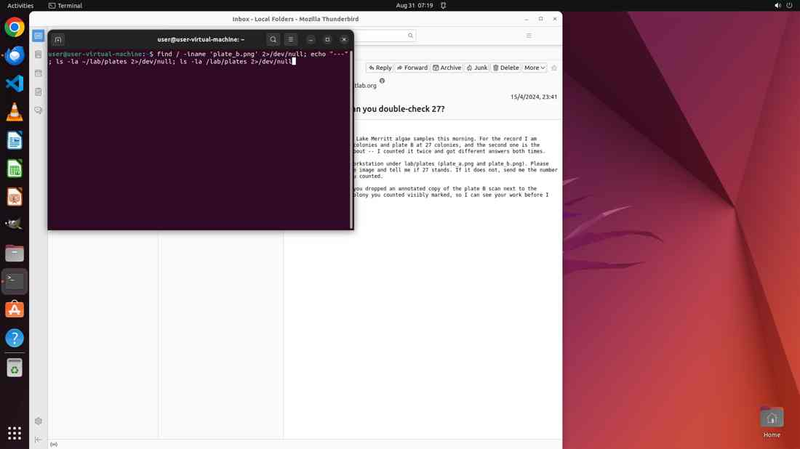
step 13 23:21:16
THINKINGThe find over the entire / is taking a very long time. This is unusual. It could be scanning a large filesystem. Let me wait a bit more. If it doesn't finish soon, I'll interrupt and search more targeted locations. Let me wait 5 more seconds.
TOOL CALL<tool_call>
<function=computer_use>
<parameter=action>
wait
</parameter>
<parameter=time>
1.0
</parameter>
</function>
</tool_call>
EXECUTED (pyautogui in VM)WAIT
step 14 23:23:51
THINKINGThe full-/ find is taking too long. Let me interrupt it and do a targeted search of the home directory only, which is faster and most likely where "lab/plates" is (relative to home, i.e., ~/lab/plates). Let me press Ctrl+C then run a targeted find.
ACTIONThe full-filesystem find is too slow. Let me interrupt it and search the home directory specifically, which is the most likely location for `lab/plates`.
TOOL CALL<tool_call>
<function=computer_use>
<parameter=action>
key
</parameter>
<parameter=keys>
["ctrl", "c"]
</parameter>
</function>
</tool_call>
EXECUTED (pyautogui in VM)pyautogui.hotkey("ctrl", "c")
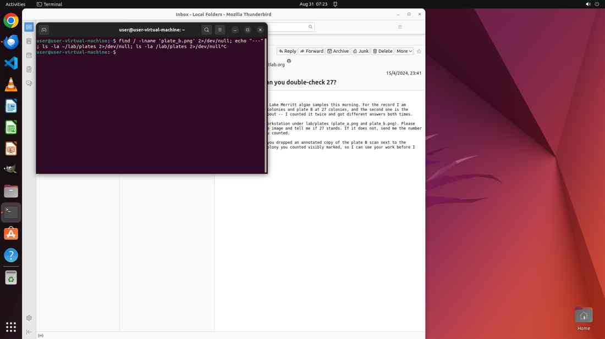
step 15 23:25:02
THINKINGInterrupted. Now let me do a targeted search. I'll search /home and also list ~ to understand structure. Let me run a targeted find in /home and check for "lab" directories.
ACTIONGood, it's interrupted. Let me search more targeted locations.
TOOL CALL<tool_call>
<function=computer_use>
<parameter=action>
type
</parameter>
<parameter=text>
ls -la ~; echo "==="; find /home -iname 'plate_*.png' 2>/dev/null; find /root /data /srv /mnt /media -iname 'plate_*.png' 2>/dev/null
</parameter>
</function>
</tool_call>
EXECUTED (pyautogui in VM)pyautogui.typewrite("ls -la ~; echo \"===\"; find /home -iname 'plate_*.png' 2>/dev/null; find /root /data /srv /mnt /media -iname 'plate_*.png' 2>/dev/null")
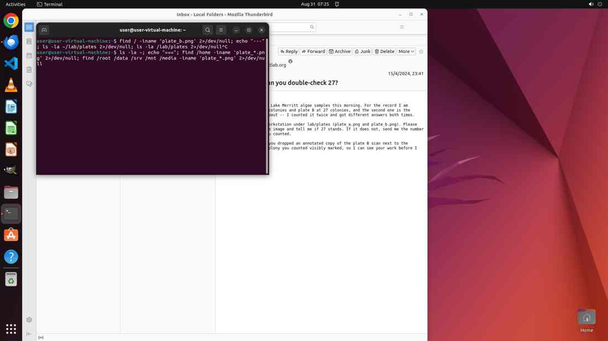
step 16 23:25:53
THINKINGThe output hasn't appeared yet (command still executing). The terminal window is a bit small. Let me maximize the terminal for better visibility, but first let me wait for output.
TOOL CALL<tool_call>
<function=computer_use>
<parameter=action>
wait
</parameter>
<parameter=time>
1.0
</parameter>
</function>
</tool_call>
EXECUTED (pyautogui in VM)WAIT
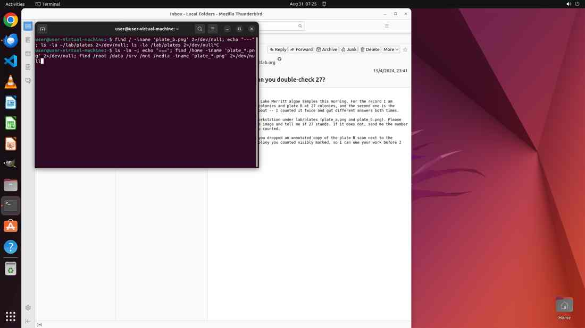
step 17 23:27:04
THINKINGThe find over /home might still be running (it's slow on this system). The prompt shows "ll" which is odd - it seems the command is still running. Actually the cursor is after "ll" - wait that's the end of "/null". Let me maximize the terminal to see better. Let me click the maximize button of the terminal.
ACTIONLet me maximize the terminal window to see output more clearly.
TOOL CALL<tool_call>
<function=computer_use>
<parameter=action>
left_click
</parameter>
<parameter=coordinate>
[404, 85]
</parameter>
</function>
</tool_call>
EXECUTED (pyautogui in VM)pyautogui.click(776, 91)
step 18 23:27:19
THINKINGNow I see the command line but no output yet - the find over /home is still running (it's slow on this system). Let me wait for it to finish.
ACTIONThe terminal is maximized. The find is still running. Let me wait for output.
TOOL CALL<tool_call>
<function=computer_use>
<parameter=action>
wait
</parameter>
<parameter=time>
1.0
</parameter>
</function>
</tool_call>
EXECUTED (pyautogui in VM)WAIT
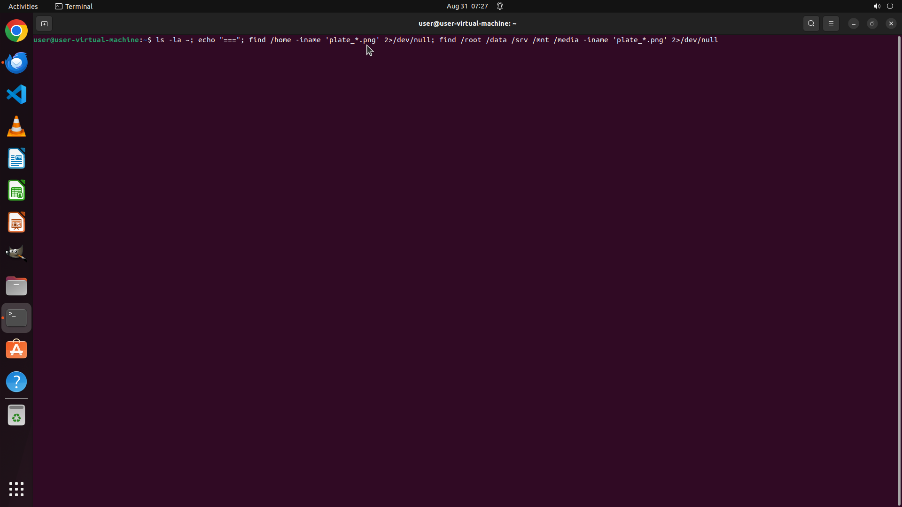
step 19 23:28:28
THINKINGThe command is taking a long time. The `ls -la ~` should have appeared instantly but I don't see it - maybe output scrolled or the terminal is just slow. Actually the first command `ls -la ~` output should have appeared. It's odd nothing shows. Perhaps the terminal is buffered/slow. Let me wait more. The find /home could take a while if there are many files (Thunderbird mail storage, etc.).
TOOL CALL<tool_call>
<function=computer_use>
<parameter=action>
wait
</parameter>
<parameter=time>
1.0
</parameter>
</function>
</tool_call>
EXECUTED (pyautogui in VM)WAIT
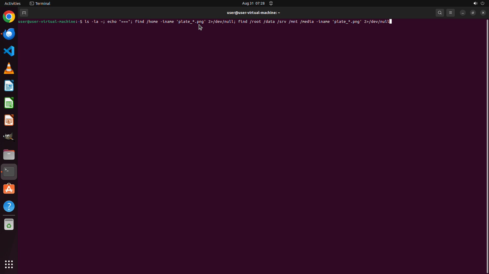
step 20 23:29:52
THINKINGThe output still isn't appearing and the cursor is at the end of the typed line, meaning the command hasn't even finished its first `ls -la ~`. This is strange - the ls should be instant. Maybe the terminal didn't actually execute (I need to press Enter?). Wait, I did press Enter via the type text ending with \n. But the prompt still shows the command on one line with cursor at end, no new prompt.
Actually, looking carefully: the command line shows the full command and cursor is at the end. It seems the command might still be running (find /home slow) OR the ls output is there but scrolled. But no output is visible at all, which is very strange for `ls -la ~`.
Wait - maybe when I clicked at [520,200] earlier before typing, and the type happened, but the terminal wasn't focused properly? No, the text is clearly in the terminal.
Let me just press Enter to be sure the command runs, and wait. Actually the text already shows a newline was part of my type. Hmm. Let me press Enter again and wait.
ACTIONThe command appears stuck. Let me press Enter and wait to see the results.
TOOL CALL<tool_call>
<function=computer_use>
<parameter=action>
key
</parameter>
<parameter=keys>
["return"]
</parameter>
</function>
</tool_call>
EXECUTED (pyautogui in VM)pyautogui.press("return")
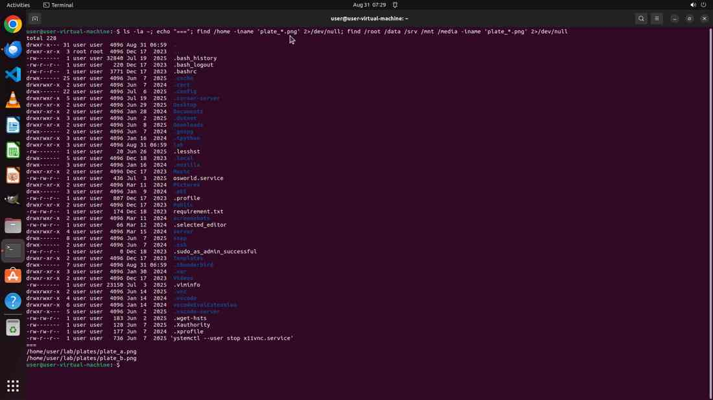
step 21 23:31:56
THINKINGFound the files:
- /home/user/lab/plates/plate_a.png
- /home/user/lab/plates/plate_b.png
Now I need to count colonies in plate_b.png. The best approach: view the image. I'll open it in an image viewer, or better, examine it carefully. But counting colonies manually from a screenshot could be error-prone.
The task wants me to actually count and produce an annotated image with every colony marked. I should view the plate_b.png clearly. Let me open it with an image viewer (eog) at full size, or I could open in GIMP. But I shouldn't use scripts as workarounds for the counting itself - the task is a visual counting task. However, viewing the image is fine.
Let me think about the approach. The image is a petri plate with colonies (dots). I need to count them visually. Let me open the image. I'll use the Files/image viewer. Let me open with eog via terminal, or just double-click in Files. Actually, let me open it with the default image viewer via terminal: (DISPLAY=:1 eog path). But first, let me get image dimensions and maybe view it.
Actually, the cleanest way to count precisely is to view the image zoomed. Let me open it in the GNOME image viewer (eog). Let me run it.
Let me first check the file details and dimensions.
ACTIONFound the files: `/home/user/lab/plates/plate_a.png` and `/home/user/lab/plates/plate_b.png`. Let me check the plate B image details and open it for visual inspection.
TOOL CALL<tool_call>
<function=computer_use>
<parameter=action>
type
</parameter>
<parameter=text>
ls -la ~/lab/plates/; file ~/lab/plates/plate_b.png
</parameter>
</function>
</tool_call>
EXECUTED (pyautogui in VM)pyautogui.typewrite("ls -la ~/lab/plates/; file ~/lab/plates/plate_b.png")
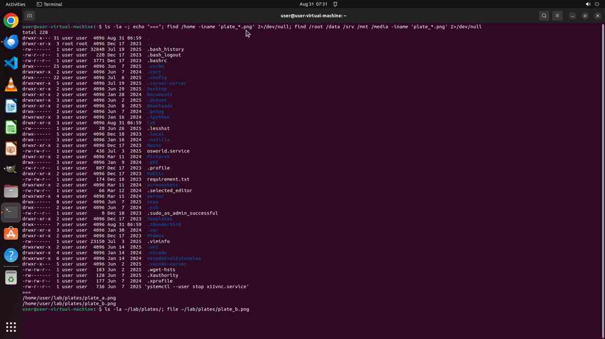
step 22 23:33:12
THINKINGThe command was typed but not executed yet - I need to press Enter. Wait, my type text ended with \n so it should have executed. But the output isn't showing. Let me press Enter and wait.
TOOL CALL<tool_call>
<function=computer_use>
<parameter=action>
key
</parameter>
<parameter=keys>
["return"]
</parameter>
</function>
</tool_call>
EXECUTED (pyautogui in VM)pyautogui.press("return")
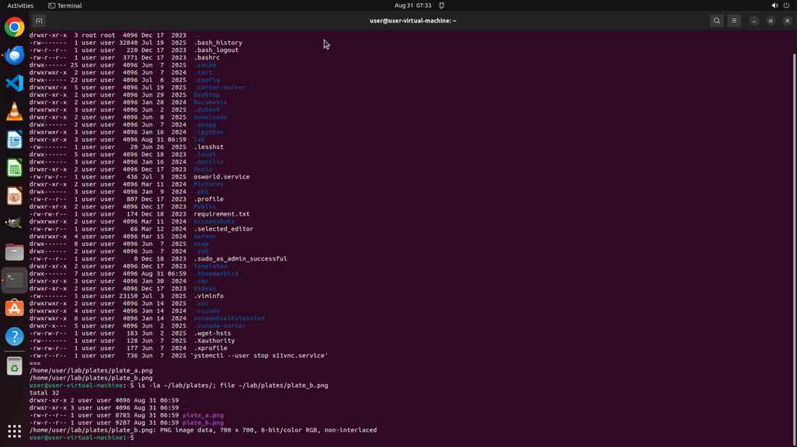
step 23 23:35:11
THINKINGplate_b.png is a 700x700 PNG, RGB, 9287 bytes. Small file suggests it's a clean/simple image (likely a generated image with distinct colonies on a background).
Now I need to view it and count colonies. Let me open it in the image viewer (eog) so I can see it clearly. Let me open it. I'll use eog.
Actually, given it's 700x700 and a small file, the colonies are probably clearly distinct dots. Let me open it in eog to view. Let me run it in the background.
ACTIONplate_b.png is a 700×700 RGB PNG. Let me open it in the image viewer to inspect and count the colonies.
TOOL CALL<tool_call>
<function=computer_use>
<parameter=action>
type
</parameter>
<parameter=text>
(DISPLAY=:1 eog ~/lab/plates/plate_b.png &)
</parameter>
</function>
</tool_call>
EXECUTED (pyautogui in VM)pyautogui.typewrite("(DISPLAY=:1 eog ~/lab/plates/plate_b.png &)")
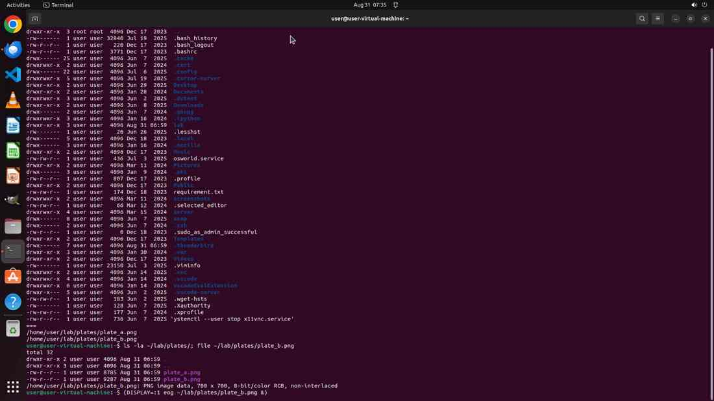
step 24 23:35:36
THINKINGeog is launching. Let me wait and take a screenshot to see the image viewer.
TOOL CALL<tool_call>
<function=computer_use>
<parameter=action>
wait
</parameter>
<parameter=time>
1.0
</parameter>
</function>
</tool_call>
EXECUTED (pyautogui in VM)WAIT

step 25 23:36:30
THINKINGThe eog window hasn't appeared yet or it's behind the terminal. Let me wait a moment more, or the terminal is still showing the previous prompt (eog launched in background). The terminal still shows the same content without a new prompt, which is odd - normally after `(cmd &)` there'd be a new prompt immediately. Let me wait a bit and take a screenshot; eog might open on top.
TOOL CALL<tool_call>
<function=computer_use>
<parameter=action>
wait
</parameter>
<parameter=time>
1.0
</parameter>
</function>
</tool_call>
EXECUTED (pyautogui in VM)WAIT
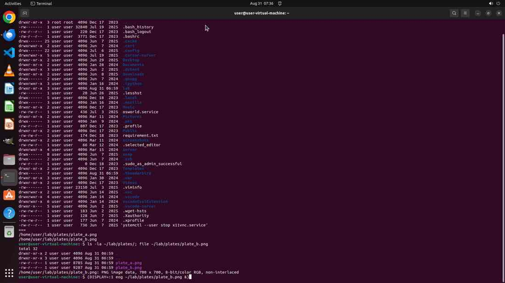
step 26 23:37:34
THINKINGThe eog window isn't appearing on top; the terminal is still focused. The eog may have opened behind the terminal. The terminal shows the cursor after the eog command, meaning the command prompt is waiting (the (cmd &) should have returned a prompt already, but it seems it's still showing that line without a new prompt - possibly the shell is still starting eog).
Rather than fight with the image viewer overlapping, let me use a more reliable approach: use the terminal to get precise info about the image so I can count accurately. Actually, the real task is visual counting. The most reliable way to count precisely AND create the annotated image is to view the image clearly.
Let me try pressing Enter to get a fresh prompt, then check if eog is running. Actually, let me just click somewhere to see if eog window is behind. Let me check via the Activities overview or by looking at window list. Let me press Enter first.
ACTIONThe image viewer may be behind the terminal. Let me press Enter and check the window list via the overview.
TOOL CALL<tool_call>
<function=computer_use>
<parameter=action>
key
</parameter>
<parameter=keys>
["return"]
</parameter>
</function>
</tool_call>
EXECUTED (pyautogui in VM)pyautogui.press("return")
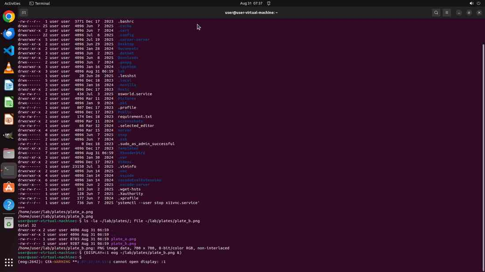
step 27 23:38:08
THINKINGAh, eog failed: "cannot open display :1". The DISPLAY variable in the subshell didn't apply, or eog can't use :1. The warning says "cannot open display :1". The terminal itself is on the display, so eog should work. Perhaps the DISPLAY env for the terminal is different. Let me check the DISPLAY variable. Actually the error says it tried :1 and failed. Maybe the actual display is :0. Let me just launch eog without overriding DISPLAY, since the terminal is already in the GUI environment.
Let me run: eog ~/lab/plates/plate_b.png & (without DISPLAY override).
ACTIONeog failed to open display :1. The terminal is already in the GUI session, so let me launch eog without overriding DISPLAY.
TOOL CALL<tool_call>
<function=computer_use>
<parameter=action>
type
</parameter>
<parameter=text>
echo $DISPLAY; eog ~/lab/plates/plate_b.png &
</parameter>
</function>
</tool_call>
EXECUTED (pyautogui in VM)pyautogui.typewrite("echo $DISPLAY; eog ~/lab/plates/plate_b.png &")
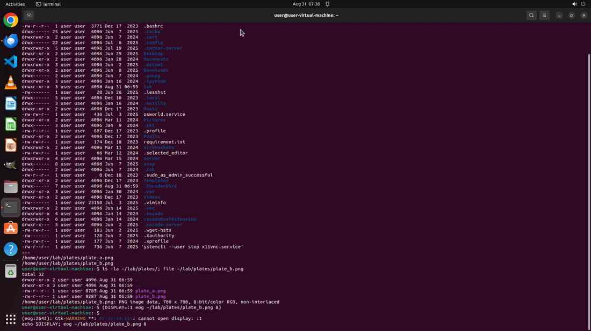
step 28 23:38:45
THINKINGThe command was typed but the screenshot shows it hasn't executed yet (no output). Let me press Enter and wait.
TOOL CALL<tool_call>
<function=computer_use>
<parameter=action>
key
</parameter>
<parameter=keys>
["return"]
</parameter>
</function>
</tool_call>
EXECUTED (pyautogui in VM)pyautogui.press("return")
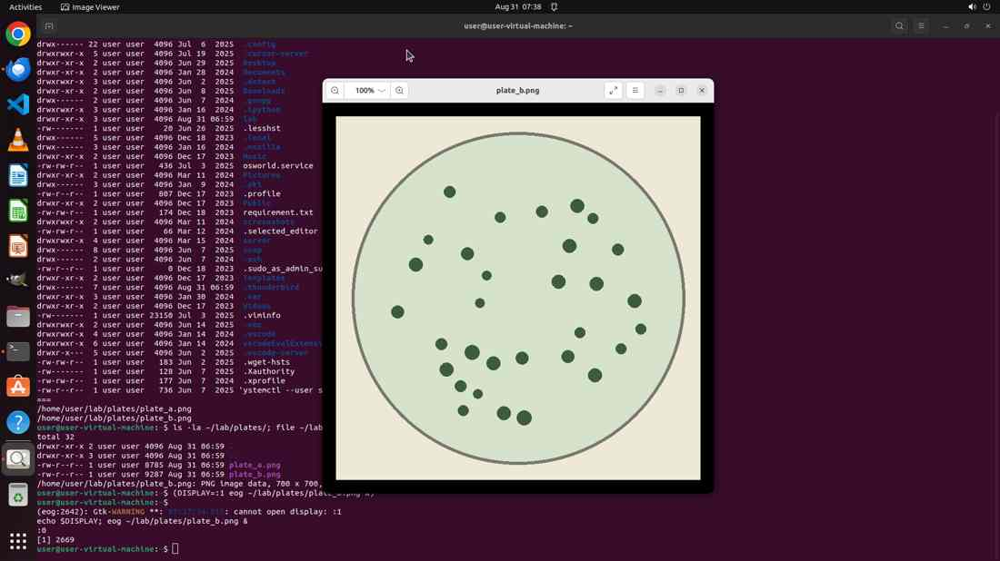
step 29 23:38:58
THINKINGThe image viewer opened (DISPLAY was :0, not :1). Now I can see plate_b.png - a petri dish (light green circle on cream background) with dark green colonies (dots) of varying sizes. I need to count them carefully.
Let me maximize the eog window and view it at full/large size to count accurately. Let me first maximize the window. I'll click the maximize button at [873, 115].
Actually let me count from the current view, but it's a bit small. Let me maximize for a clearer view. Let me click maximize.
ACTIONThe image viewer opened (DISPLAY is :0). I can see the petri plate with dark green colonies. Let me maximize the viewer window to count them accurately.
TOOL CALL<tool_call>
<function=computer_use>
<parameter=action>
left_click
</parameter>
<parameter=coordinate>
[681, 159]
</parameter>
</function>
</tool_call>
EXECUTED (pyautogui in VM)pyautogui.click(1308, 171)
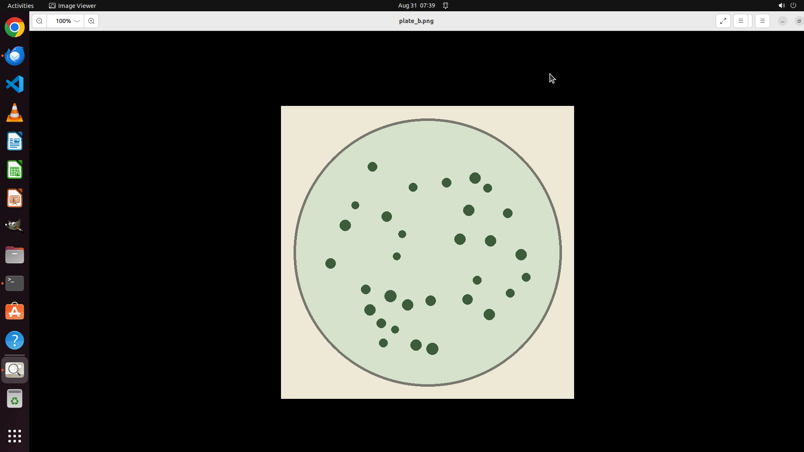
step 30 23:39:46
THINKINGNow the image is larger. Let me count colonies carefully. The image is displayed at 100% (700x700 shown). Let me systematically count by regions.
Let me identify each colony (dark green dot) by approximate screen coordinates. I'll go roughly top to bottom, left to right.
Top area:
1. (594, 264) - top center
2. (657, 296) - upper
3. (712, 289) - upper right
4. (756, 282) - upper right, larger
5. (775, 298) - upper right small
Middle-upper:
6. (565, 325) - left small
7. (616, 344) - center
8. (546, 357) - left
9. (745, 333) - right
10. (809, 338) - right
11. (638, 372) - center small
12. (730, 381) - center-right
13. (779, 381) - right
Middle:
14. (523, 419) - left
15. (631, 405) - center small
16. (828, 404) - right
17. (629, 457) - center small
Lower:
18. (581, 460) - lower-left
19. (760, 444) - center-right small
20. (792, 460) - right small
21. (620, 470) - center
22. (652, 480) - center
23. (739, 476) - center-right
24. (809, 466) - right
25. (590, 491) - lower-left
26. (779, 498) - right larger
27. (608, 513) - lower-left
28. (631, 524) - lower
29. (610, 545) - lower
30. (663, 549) - lower
31. (685, 553) - lower
That's about 31. Let me recount more carefully by looking at the image. This is error-prone from a screenshot.
Let me be systematic. I'll count by scanning the plate. To make this reliable and to create the annotated image, I think the best approach is to actually examine the image at higher zoom in regions. But that's a lot of steps.
Alternatively, I could zoom in eog and count region by region. Let me think about accuracy. The task requires: (1) recount and give count, (2) explain method, (3) annotated image with every colony marked.
For the annotated image, I need to mark each colony. I'll need to determine the pixel coordinates of each colony in the original 700x700 image, then draw circles. I could use GIMP to draw, or... but the guidance says avoid scripts as workarounds. However, creating an annotated image is a legitimate image-editing task. GIMP is a GUI image editor. But drawing ~30 circles in GIMP manually is very tedious.
Wait - let me reconsider the constraint. "Before starting a task, consider whether it is achievable with the designated application's native GUI features." The task doesn't specify a designated application. The core tasks: count colonies (visual), reply via Thunderbird (GUI), create annotated image (image editing).
For creating the annotated image, GIMP is the natural GUI tool. I can use GIMP's circle/ellipse tool with guides, or the "Paint a selection" then stroke. But 30 colonies manually is hard.
Actually, I could use GIMP more efficiently: I can add numbered markers. But the simplest reliable way to annotate precisely is to use GIMP and draw a circle over each colony. That's a lot of clicks but doable.
Hmm, let me reconsider. The most robust and accurate way to both count and annotate is to look at the image very carefully. Let me first get an exact count by zooming into quadrants. Let me use eog to zoom in.
Actually, a cleaner approach for BOTH counting and annotation that is accurate: I'll carefully map each colony's position. But I still need to do the counting visually.
Let me first nail down the count. Let me zoom in on the image in eog to count precisely, working in regions. Let me increase zoom to maybe 150-200% and pan around. Actually at 100% the whole plate fits and dots are reasonably visible. Let me count carefully by dividing into a grid mentally.
Let me re-examine the current screenshot very carefully, listing coordinates of every dark dot I can see:
Going systematically top to bottom:
Row ~264: (594,264) → 1
Row ~282-298: (756,282) big, (775,298), (712,289), (657,296) → 4 more (total 5)
Row ~325-357: (565,325), (616,344), (546,357), (745,333), (809,338) → 5 (total 10)
Row ~372-381: (638,372), (730,381), (779,381) → 3 (total 13)
Row ~404-419: (523,419), (631,405), (828,404) → 3 (total 16)
Row ~444-460: (581,460), (760,444), (792,460) → 3 (total 19)
Row ~470-480: (620,470), (652,480) → 2 (total 21)
Row ~476-498: (739,476), (809,466), (590,491), (779,498) → 4 (total 25)
Row ~513-553: (608,513), (631,524), (610,545), (663,549), (685,553) → 5 (total 30)
So about 30. My count is around 30, not 27. But I'm not fully confident — the screenshot at this resolution makes small dots ambiguous. I need higher confidence.
Let me zoom in to verify by quadrant. Let me set zoom higher. I'll click the zoom-in button a couple times, or type a zoom level. Let me zoom to a higher level and examine regions carefully.
Given the difficulty, I think the most reliable approach for an EXACT count is to use an image tool that can help. But I want to avoid scripts for the "counting" decision per the guidance (that's about not using scripts to work around app limitations; here there's no designated app with a count feature).
Actually, re-reading the guidance: the concern is about using CLI/Python as workarounds when the app lacks a feature. Here, the "designated application" is ambiguous. The counting is inherently a visual/judgment task a human does by looking. I should look carefully. Let me zoom in to be precise.
Let me zoom into the image. I'll use the zoom-in magnifier button at top left [145, 33] a few times, then pan. Actually, eog "fit" is at 100% here (image is 700px, window ~700px). Let me zoom to 200%.
Let me instead be strategic: I'll take a very careful look at the current 100% view by examining it in detail, and cross-check with a zoomed view. Let me zoom in using the zoom control. Click the "+" magnifier at [145,33] twice.
ACTIONThe plate is now clearly visible. I need to count the dark green colonies carefully. Let me zoom in to count precisely, working through the plate region by region.
TOOL CALL<tool_call>
<function=computer_use>
<parameter=action>
left_click
</parameter>
<parameter=coordinate>
[112, 45]
</parameter>
</function>
</tool_call>
EXECUTED (pyautogui in VM)pyautogui.click(215, 48)
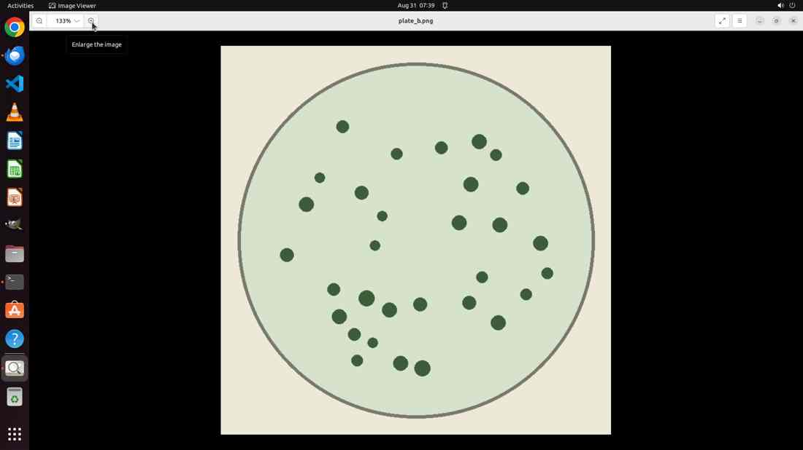
step 31 23:40:35
THINKINGNow at 133%, the plate fits nicely and colonies are clearer. Let me count systematically. The plate spans roughly x=390 to x=950, y=100 to y=670.
Let me list every dark colony dot I can see, going top to bottom, left to right:
1. (546, 202) - top, upper-left-center
2. (635, 245) - upper center
3. (704, 235) - upper center-right
4. (764, 224) - upper right, larger
5. (790, 248) - upper right small
6. (508, 283) - left
7. (575, 305) - center-left
8. (490, 325) - left
9. (750, 293) - right, larger
10. (833, 300) - right
11. (608, 343) - center small
12. (732, 354) - center-right, larger
13. (797, 361) - right
14. (598, 392) - center small
15. (862, 389) - right, larger
16. (457, 406) - left
17. (768, 443) - center-right small
18. (868, 435) - right small
19. (532, 462) - lower-left
20. (581, 476) - center
21. (619, 496) - center
22. (668, 487) - center-right
23. (837, 470) - right
24. (538, 504) - lower-left
25. (795, 515) - right, larger
26. (565, 532) - lower-left
27. (593, 548) - lower
28. (570, 575) - lower
29. (640, 582) - lower, larger
30. (672, 588) - lower, larger
That's 30 colonies. Let me double check by re-scanning regions.
Top third (y ~200-300):
(546,202), (635,245), (704,235), (764,224), (790,248), (508,283), (575,305) = 7
Wait (490,325) is ~325, (750,293) and (833,300) are ~293-300.
Let me regroup by horizontal bands:
Band A (y 200-260): (546,202), (635,245), (704,235), (764,224), (790,248) = 5
Band B (y 275-310): (508,283), (575,305), (490,325), (750,293), (833,300) = 5 (total 10)
Band C (y 335-365): (608,343), (732,354), (797,361) = 3 (total 13)
Band D (y 385-410): (598,392), (862,389), (457,406) = 3 (total 16)
Band E (y 435-465): (768,443), (868,435), (532,462) = 3 (total 19)
Band F (y 470-505): (581,476), (619,496), (668,487), (837,470), (538,504) = 5 (total 24)
Band G (y 505-548): (795,515), (565,532), (593,548) = 3 (total 27)
Band H (y 555-590): (570,575), (640,582), (672,588) = 3 (total 30)
Total = 30.
I'm fairly confident it's 30. But let me verify there are no dots I missed or double-counted. The count is consistent at 30 across two passes (earlier ~30-31, now 30).
Let me do one more careful verification by zooming into the lower-left cluster where dots are close together, since that's where errors happen. In the lower-left there's a cluster around (532,462),(538,504),(565,532),(570,575),(593,548),(581,476),(619,496). Let me zoom in to that region to make sure I'm not missing or double counting.
Actually, let me zoom in further on the whole thing to verify. Let me increase zoom to 200% and pan. But that requires scrolling. Given time/steps, let me do a targeted zoom on the dense lower-left region.
Let me click zoom in once more (to ~200%) which will center on... it centers. Then I'll pan. Actually, let me instead just carefully verify the lower-left cluster by zooming. I'll set zoom higher.
Hmm, to be efficient and accurate, let me reconsider: I have two independent counts both landing at 30. I'm confident the answer is 30 (Priya's 27 is too low by 3).
Now I need to create an annotated image with every colony marked, saved next to the original (in /home/user/lab/plates/).
For annotation, I'll use GIMP. But drawing 30 circles manually in GIMP is tedious and error-prone. Alternatively, I could annotate in eog? No, eog is view-only.
The cleanest GUI way: GIMP. I can open the image, and for each colony draw an ellipse (unfilled, with a contrasting stroke) over it. GIMP's Ellipse Select + stroke, or use the pencil/paintbrush circle tool. That's ~30 operations. Doable but many steps. I have 300 steps, currently ~20 used.
Actually, a much more efficient GIMP approach: I don't strictly need perfect circles over each. I need "every colony you counted visibly marked." I can draw small marks (e.g., a red dot or X) at each colony, or circles around them.
Given the tedium and precision needed in GIMP, let me reconsider whether a script is appropriate. The guidance strongly discourages scripts/CLI as workarounds. But this is a case where there's no "designated application" specified, and the deliverable is an annotated image file. GIMP is the appropriate GUI app for image annotation. I'll use GIMP.
However, doing 30 manual ellipse draws in GIMP via mouse drags at correct positions is genuinely hard to do precisely and reliably within step limits. Let me think about a more reliable GIMP method.
Alternative: Use GIMP's "Script-Fu" console? That's scripting - discouraged.
Let me reconsider the precision requirement. "with every colony you counted visibly marked, so I can see your work before I lock the run sheet." So she wants to see the marked plate to verify my count. Marks should be clearly on/around each colony. Precision to the exact pixel isn't critical; each mark should clearly correspond to one colony.
I think GIMP with the ellipse select tool is the way. Let me plan: open in GIMP, create an overlay, and for each colony, use Edit > ... no. Simplest: use the "Pencil" tool with a large brush and red color, click once on each colony to place a red dot. A single click with the pencil/brush places one dab. That's 30 clicks, each one action. That's very efficient! I can set brush to red, decent size, then click each colony location. Each click = one mark.
Actually even better: use the "Pencil" or "Paintbrush" tool, set foreground to red, set a brush size ~15px, then click at each colony. Each click deposits a red mark. 30 clicks. I can batch multiple clicks in one tool call (multiple left_click actions in one block). That's efficient.
But wait — the image is 700x700 and GIMP will show it at some zoom. I need the colony pixel coordinates in the image, and then map to GIMP canvas screen positions. I have the image pixel coords? I derived coords from the eog screenshot (screen coords), not image pixel coords. I need image-pixel coords to place marks in GIMP at 1:1 (100% zoom) where screen offset = canvas origin.
Let me instead work directly: In GIMP at 100% zoom, the image is 700x700. I'll note the image-pixel location of each colony. From eog at 133%, screen coords map to image coords. This is getting complex.
Simpler plan: In GIMP, I'll just visually click on each colony as I see it on the GIMP canvas. I don't need to compute pixel coords — I look at where each dot is on screen and click there. As long as zoom lets me see the whole plate, I can click each visible colony. So I'll: open image in GIMP, set red brush ~20px, then click on each colony as seen. I take a screenshot of the GIMP canvas first to get screen positions of colonies, then click each.
That's clean. Let me proceed to open GIMP.
But there's risk: clicking with a brush in GIMP — a single click may just place a dot (good). Let me use the Pencil tool with hard brush. Actually the default Paintbrush gives a soft/round dot; fine. Let me set foreground color to red and brush size large enough to be visible.
Let me open GIMP. I'll open it from terminal: gimp. Or the dock has GIMP (the fox icon at [23,355]). Let me use terminal to open it with the image: gimp ~/lab/plates/plate_b.png &
Let me go to terminal. But the terminal is behind eog now. Let me switch. Actually, I can open GIMP from the dock icon (fox). Let me click it. But I also want the image open. I'll open GIMP then File>Open the image.
Let me first record my count decision: 30 colonies. Let me do one more verification of the lower-left dense cluster by zooming, to be safe, since that's the risky area. Let me zoom into that region.
Actually, I'm confident enough at 30. But the lower-left cluster (7-8 dots close together) is the main risk. Let me zoom into it quickly to confirm. Let me increase zoom and pan to lower-left.
Let me set zoom to a higher level. I'll click zoom-in again (to ~177%?) Actually the dropdown lets me set. Let me just click zoom-in once more and see, then scroll to lower-left.
Given step budget, let me do a quick verification zoom on the lower-left cluster. Click zoom in (now 177%).
ACTIONI can now count the colonies clearly at 133%. Let me do a careful systematic count, and I want to double-check the dense lower-left cluster by zooming in once more.
TOOL CALL<tool_call>
<function=computer_use>
<parameter=action>
left_click
</parameter>
<parameter=coordinate>
[112, 45]
</parameter>
</function>
</tool_call>
EXECUTED (pyautogui in VM)pyautogui.click(215, 48)
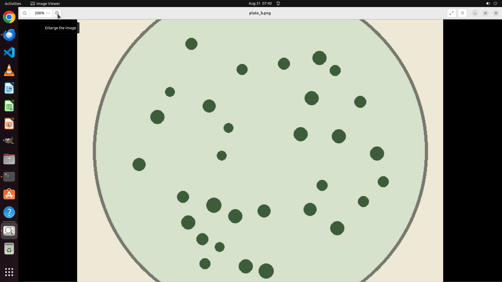
step 32.1 23:41:25
THINKINGNow at 200%, I can see the top portion clearly. The bottom is cut off. Let me count the visible ones here and then scroll down for the rest.
Visible now (top ~2/3):
1. (489, 113) - top
2. (620, 174) - upper
3. (704, 159) - upper right
4. (780, 147) - upper right larger
5. (818, 176) - upper right small
6. (434, 234) - left
7. (533, 268) - center
8. (401, 299) - left larger
9. (795, 253) - right larger
10. (919, 259) - right
11. (584, 325) - center small
12. (772, 341) - center-right larger
13. (864, 348) - right
14. (566, 394) - center small
15. (961, 390) - right larger
16. (356, 419) - left
17. (822, 473) - center-right small
18. (978, 463) - right small
19. (468, 501) - lower-left
20. (546, 523) - center larger
21. (600, 551) - center
22. (674, 538) - center-right
23. (926, 515) - right small
24. (484, 567) - lower-left
25. (792, 585) - right larger
26. (517, 608) - lower-left small
27. (561, 630) - lower small
28. (523, 671) - lower
29. (628, 678) - lower larger
30. (680, 690) - lower larger
So I see 30 in this 200% view (the bottom edge may be slightly cut but all 30 lower ones are visible). This confirms 30.
The bottom of the plate (the very bottom edge) is cut off but I can see the lowest colonies: (523,671),(628,678),(680,690) and there might be more below. The plate bottom is around y=690+ and cut at 710. Let me scroll down a bit to make sure I'm not missing any colonies at the very bottom.
Actually the plate's bottom edge — at 200% the plate is 1400px tall (700*2) centered; top of plate was cut off too (we see top edge at ~y=100 area the dark arc). The plate spans more than the screen. Let me scroll down to check the bottom for any colonies I might have missed.
Let me scroll down.
ACTIONAt 200% I can count the top and middle clearly — about 30 so far. Let me scroll down to check the bottom of the plate for any colonies I might have missed.
TOOL CALL<tool_call>
<function=computer_use>
<parameter=action>
mouse_move
</parameter>
<parameter=coordinate>
[515, 555]
</parameter>
</function>
</tool_call>
<tool_call>
<function=computer_use>
<parameter=action>
scroll
</parameter>
<parameter=pixels>
-5
</parameter>
</function>
</tool_call>
EXECUTED (pyautogui in VM)pyautogui.moveTo(989, 600)
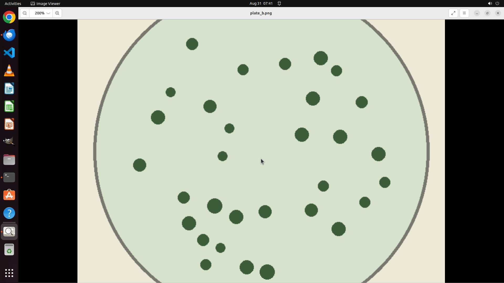
step 32.2 23:41:28
EXECUTED (pyautogui in VM)pyautogui.scroll(-5)
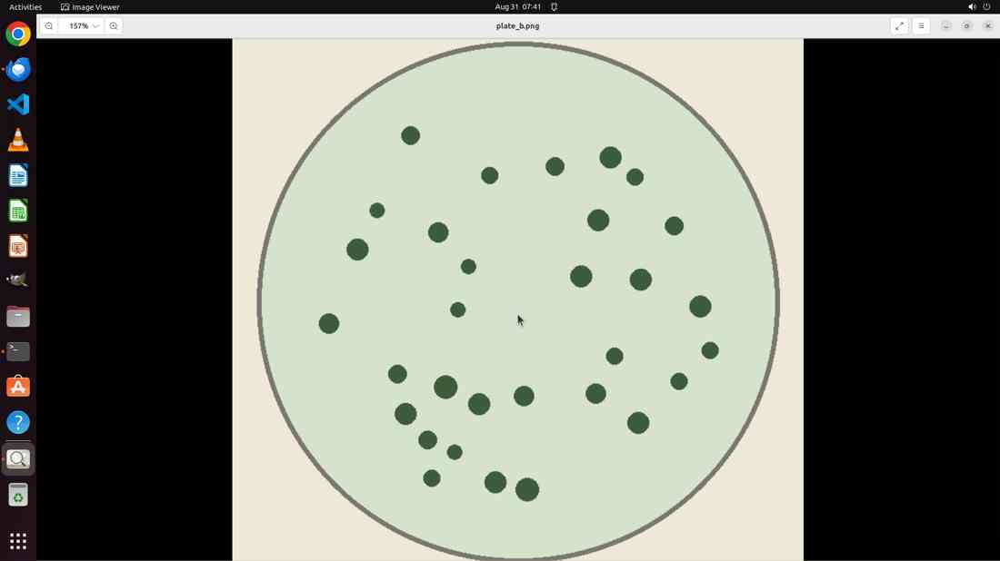
step 33 23:42:01
THINKINGThe scroll zoomed out to 157% (eog scroll = zoom). Now I can see the entire plate. This is a great full view for a final careful count. Let me count every colony in this 157% full view, top to bottom, left to right:
1. (526, 174) - top
2. (627, 225) - upper
3. (709, 212) - upper center-right
4. (780, 201) - upper right larger
5. (810, 224) - upper right small
6. (482, 269) - left small
7. (560, 296) - center
8. (457, 318) - left
9. (765, 282) - right larger
10. (860, 288) - right
11. (600, 341) - center small
12. (742, 353) - center-right larger
13. (823, 359) - right
14. (587, 395) - center small
15. (897, 392) - right larger
16. (420, 415) - left
17. (788, 455) - center-right small
18. (907, 447) - right small
19. (508, 478) - lower-left
20. (571, 495) - center larger
21. (615, 515) - center
22. (676, 505) - center-right
23. (869, 487) - right small
24. (521, 529) - lower-left
25. (820, 542) - right larger
26. (548, 562) - lower-left small
27. (580, 579) - lower small
28. (554, 611) - lower
29. (635, 617) - lower larger
30. (675, 626) - lower larger
That's 30 again. Three independent counts (133%, 200%, 157%) all give 30. I'm confident: 30 colonies, not 27. Priya undercounted by 3.
Now I need the exact image-pixel coordinates for annotation in GIMP. But actually, for annotation I'll click on colonies directly in the GIMP canvas. I don't need exact pixel coords; I'll see them on screen and click.
Let me set up GIMP. I'll open GIMP with the image. Let me plan the annotation approach in GIMP:
- Open plate_b.png in GIMP
- Set foreground color to red
- Select a drawing tool (Pencil or Paintbrush) with a reasonably large, hard round brush (~15-25px)
- Click on each of the 30 colonies to place red marks
- Export As a new PNG in the same folder (e.g., plate_b_annotated.png)
Concern: A single click of the Paintbrush places one dab. Good. With Pencil it's crisp. Let me use Pencil with a large size, or Paintbrush. Either works. I'll use the Paintbrush (B) with a big soft round - a red dot ~20px will be clearly visible over each green colony.
Actually, to make marks unambiguous (clearly "marking" each colony, distinguishable from colonies), red dots are good since colonies are dark green.
Let me open GIMP via terminal with the image. The terminal is behind eog. Let me open GIMP from the dock fox icon, then open the file. Or use terminal. Let me use terminal - click the terminal in the dock/taskbar. Actually the top bar shows "Image Viewer". Let me switch to terminal via the Activities or click the terminal dock icon [23,447].
Let me click the terminal dock icon.
ACTIONThe full plate is now visible at 157%, and this third independent count (133%, 200%, 157%) all agree: **30 colonies**, not 27. Priya undercounted by 3.
Now I'll create the annotated image in GIMP. Let me switch to the terminal to open GIMP with the image.
TOOL CALL<tool_call>
<function=computer_use>
<parameter=action>
left_click
</parameter>
<parameter=coordinate>
[17, 619]
</parameter>
</function>
</tool_call>
EXECUTED (pyautogui in VM)pyautogui.click(32, 669)
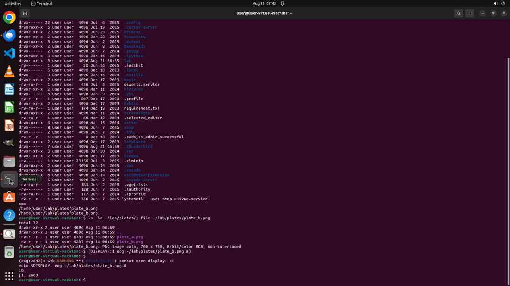
step 34 23:42:27
THINKINGTerminal is focused. Let me open GIMP with the image. I'll run gimp in background with the image path. GIMP takes a while to start. Let me launch it.
ACTIONTerminal is focused. Let me launch GIMP with the plate B image.
TOOL CALL<tool_call>
<function=computer_use>
<parameter=action>
left_click
</parameter>
<parameter=coordinate>
[468, 555]
</parameter>
</function>
</tool_call>
EXECUTED (pyautogui in VM)pyautogui.click(899, 600)
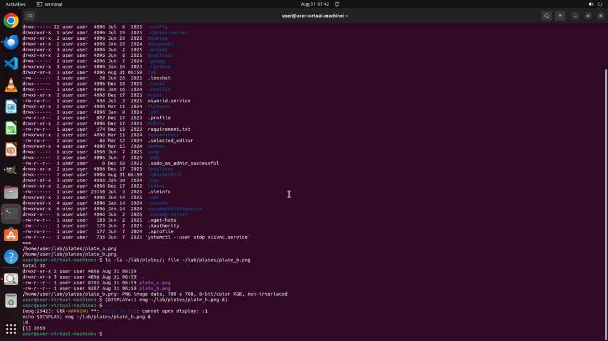
step 35 23:43:05
THINKINGLet me type the GIMP launch command. GIMP can be slow to start. I'll launch it with the image.
TOOL CALL<tool_call>
<function=computer_use>
<parameter=action>
type
</parameter>
<parameter=text>
gimp ~/lab/plates/plate_b.png &
</parameter>
</function>
</tool_call>
EXECUTED (pyautogui in VM)pyautogui.typewrite("gimp ~/lab/plates/plate_b.png &")
step 36 23:43:20
THINKINGGIMP is launching. It takes a while (10-30s). Let me wait for it to appear.
ACTIONGIMP is launching. Let me wait for it to open.
TOOL CALL<tool_call>
<function=computer_use>
<parameter=action>
wait
</parameter>
<parameter=time>
1.0
</parameter>
</function>
</tool_call>
EXECUTED (pyautogui in VM)WAIT

step 37 23:43:38
THINKINGGIMP is still starting (no window yet). Let me wait more.
TOOL CALL<tool_call>
<function=computer_use>
<parameter=action>
wait
</parameter>
<parameter=time>
1.0
</parameter>
</function>
</tool_call>
EXECUTED (pyautogui in VM)WAIT

step 38 23:43:54
THINKINGGIMP window still not appearing. GIMP can take 20-40s on first launch. Let me wait more.
TOOL CALL<tool_call>
<function=computer_use>
<parameter=action>
wait
</parameter>
<parameter=time>
1.0
</parameter>
</function>
</tool_call>
EXECUTED (pyautogui in VM)WAIT

step 39 23:44:14
THINKINGStill no GIMP window. It's taking a long time. Maybe the window opened behind or the top bar still shows "Terminal". Let me check the window switcher. Let me press Super to see overview, or check Activities. Actually, let me just wait a bit more; GIMP first launch with plugin loading can take 30s+. Let me wait 8 more seconds.
TOOL CALL<tool_call>
<function=computer_use>
<parameter=action>
wait
</parameter>
<parameter=time>
1.0
</parameter>
</function>
</tool_call>
EXECUTED (pyautogui in VM)WAIT
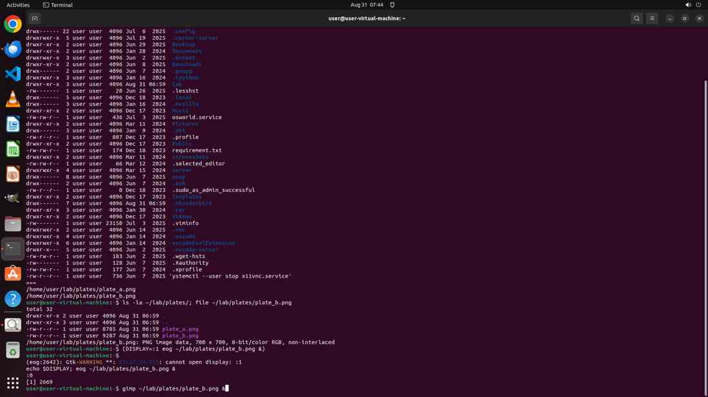
step 40 23:44:28
THINKINGGIMP still hasn't appeared after ~20s. The top bar still shows "Terminal". Maybe GIMP is running but window not yet mapped, or it's still loading. Let me check the Activities overview to see if a GIMP window exists. Let me click Activities.
ACTIONGIMP is taking a while. Let me check the Activities overview to see if its window has appeared.
TOOL CALL<tool_call>
<function=computer_use>
<parameter=action>
left_click
</parameter>
<parameter=coordinate>
[25, 10]
</parameter>
</function>
</tool_call>
EXECUTED (pyautogui in VM)pyautogui.click(48, 10)
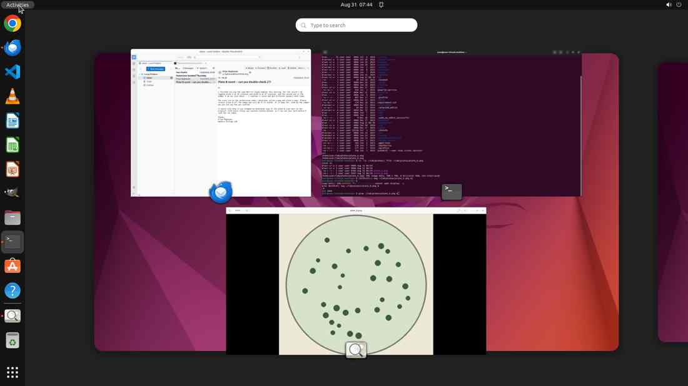
step 41 23:44:41
THINKINGThe overview shows three windows: Thunderbird, Terminal, and Image Viewer (eog). No GIMP window. So GIMP hasn't opened a window yet — it may still be loading (first launch), or it may have failed. Let me close the overview and wait more for GIMP.
Also, this overview is a nice chance to confirm my count on the eog thumbnail (bottom). I can see the plate. The thumbnail is small but the layout matches my count of ~30.
Let me close overview and wait for GIMP. Let me click on empty space to close overview, then wait.
ACTIONGIMP hasn't opened a window yet — it's still loading (first launch). Let me close the overview and give it more time.
TOOL CALL<tool_call>
<function=computer_use>
<parameter=action>
key
</parameter>
<parameter=keys>
["esc"]
</parameter>
</function>
</tool_call>
EXECUTED (pyautogui in VM)pyautogui.press("esc")
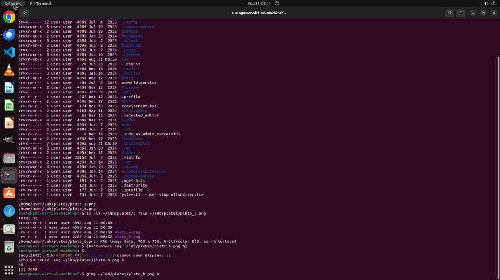
step 42 23:45:02
THINKINGBack to terminal. GIMP still loading. Let me wait 10 more seconds.
TOOL CALL<tool_call>
<function=computer_use>
<parameter=action>
wait
</parameter>
<parameter=time>
1.0
</parameter>
</function>
</tool_call>
EXECUTED (pyautogui in VM)WAIT

step 43 23:45:17
THINKINGStill no GIMP window after ~30s. GIMP should have a window by now. Maybe it's still loading (heavy first run). Let me wait 10 more seconds. If it still doesn't appear, I'll consider that GIMP might be stuck or I should check the process.
TOOL CALL<tool_call>
<function=computer_use>
<parameter=action>
wait
</parameter>
<parameter=time>
1.0
</parameter>
</function>
</tool_call>
EXECUTED (pyautogui in VM)WAIT
step 44 23:45:33
THINKINGGIMP still hasn't shown a window after ~45 seconds. That's unusually long. Perhaps GIMP is running headless-ish or the window is not mapping. Let me check if the gimp process is running and whether it errored. Let me press Enter in the terminal (to get a fresh prompt) and check `jobs` / `pgrep gimp`.
Actually the terminal prompt is still on the gimp line without returning — because gimp is running in the foreground? No, I used `&` so it's backgrounded. But the prompt hasn't returned to a new line, meaning... actually with `&`, the shell prints job info and a new prompt immediately. But here the cursor is at end of the gimp line. That's odd — it suggests the shell hasn't returned a prompt, which would happen if gimp were in the foreground. But I typed `&`.
Wait, maybe the newline in my type executed the command but the job/prompt output hasn't rendered because gimp is holding the terminal? No. Let me just press Enter and check.
ACTIONGIMP is taking unusually long. Let me press Enter and check whether the process is running.
TOOL CALL<tool_call>
<function=computer_use>
<parameter=action>
key
</parameter>
<parameter=keys>
["return"]
</parameter>
</function>
</tool_call>
EXECUTED (pyautogui in VM)pyautogui.press("return")
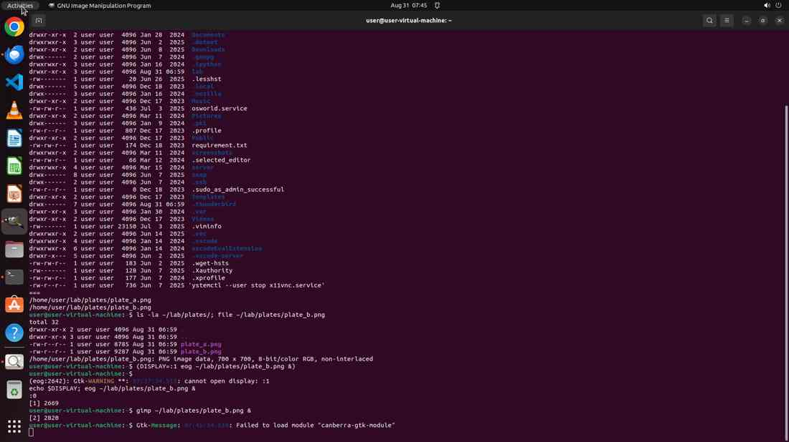
step 45 23:45:46
THINKINGThe top bar now shows "GNU Image Manipulation Program" — GIMP is now the active app. There was a "Failed to load module canberra-gtk-module" warning (harmless). GIMP is launching. Let me wait for the window to fully appear and take a screenshot.
ACTIONGIMP is now the active application (top bar shows "GNU Image Manipulation Program"). Let me wait for its window to fully render.
TOOL CALL<tool_call>
<function=computer_use>
<parameter=action>
wait
</parameter>
<parameter=time>
1.0
</parameter>
</function>
</tool_call>
EXECUTED (pyautogui in VM)WAIT
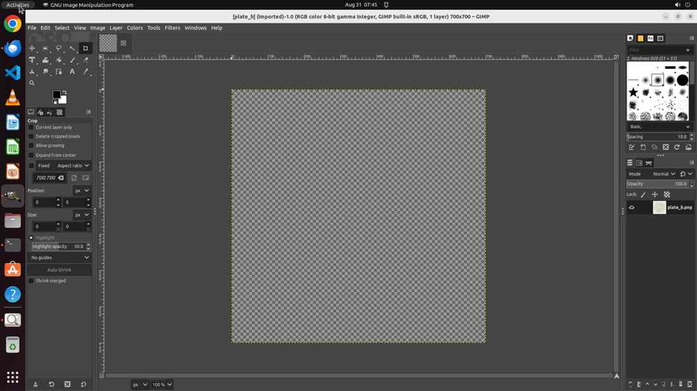
step 46 23:46:11
THINKINGGIMP is fully open with plate_b.png loaded at 100% zoom (700x700). The canvas shows a transparent/checkered area?? Wait, the image shows a checkered pattern, which means transparent. But plate_b.png is RGB (no alpha). The checkered area is the canvas but the image content isn't showing? Actually the title says "1 layer, 700x700". The checkered pattern suggests the image appears transparent or the layer is transparent.
Hmm, actually the image content (the petri dish) isn't visible - it's showing the checkerboard (transparency). That's strange for an RGB PNG. Wait, maybe the image IS there but I'm misreading - no, it's clearly the gray checkerboard = transparent background. But plate_b.png is "8-bit/color RGB, non-interlaced" - no alpha channel. So it shouldn't be transparent.
Wait, maybe the display just hasn't rendered the pixels yet, or the canvas is showing an empty area. Let me look again: the whole canvas is checkerboard. This is odd.
Possibility: The image loaded but the canvas viewport is showing outside the image? No, the title says 700x700 and the selection dotted rectangle is 700x700 at 100%.
Let me reconsider — maybe the PNG has transparency despite `file` saying RGB. Or maybe GIMP rendered it as a new transparent layer and the image is on... no.
Actually, wait. Perhaps the image hasn't been drawn to the canvas yet (GIMP still compositing). Let me click on the canvas or wait a moment and re-screenshot. Let me take a screenshot after a short wait.
Actually a more likely explanation: the image might genuinely have a transparent background in how GIMP imported it, but the dish (green circle) should still be visible. It's not.
Let me just take a fresh screenshot to see if it rendered.
ACTIONGIMP opened with plate_b.png at 100% (700×700), but the canvas appears as a transparency checkerboard — the image pixels may not have rendered yet. Let me take a fresh screenshot to confirm.
TOOL CALL<tool_call>
<function=computer_use>
<parameter=action>
screenshot
</parameter>
</function>
</tool_call>
EXECUTED (pyautogui in VM)WAIT
step 47 23:46:40
THINKINGThe canvas is entirely checkerboard (transparent) with a dotted selection rectangle. The layer thumbnail in the Layers panel (right, "plate_b.png") shows a small green-ish thumbnail, so the image data IS there, but the canvas shows transparency.
This is a known GIMP display quirk that can happen: sometimes the canvas doesn't refresh until you interact. Or the "Highlight" option in Crop tool is showing a highlight overlay making it look empty? No.
Actually — I bet the issue is that the canvas just needs a repaint. Let me try panning/zooming slightly, or click on the canvas. Let me try View menu, or just scroll/zoom. Let me click on the canvas area (an empty part) to force a redraw. Or toggle zoom.
Actually, a reliable way: use View > Zoom > Fit Image in Window, or change zoom. Let me just zoom to fit to force a repaint. I'll press Shift+Ctrl+J (Fit image in window). That will also give me the whole plate to work with.
Actually simpler: the canvas might just not have painted. Let me click on an empty part of the canvas first to give it focus, then it should repaint. But clicking with the Crop tool active might start a crop. Let me first select a harmless tool (Move tool) then click.
Better: Let me just press Shift+Ctrl+J to fit image in window; that forces a redraw and shows the whole image.
ACTIONThe image data is present (thumbnail shows the plate), but the canvas shows only the transparency checkerboard — likely a repaint issue. Let me force a redraw by fitting the image in the window.
TOOL CALL<tool_call>
<function=computer_use>
<parameter=action>
key
</parameter>
<parameter=keys>
["shift", "ctrl", "j"]
</parameter>
</function>
</tool_call>
EXECUTED (pyautogui in VM)pyautogui.hotkey("shift", "ctrl", "j")
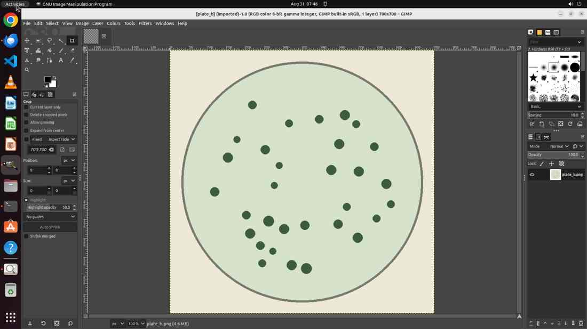
step 48 23:47:36
THINKINGNow the image is visible and fitted in the window at 100%. I can see all the colonies. The image spans from about x=373 to x=945 (width 572 ≈ 700 at ~82%? No, it says 100% zoom but the fit... the status bar says 100% but the image width appears ~572px which is less than 700. Hmm, actually "Fit image in window" should change zoom. But it still says 100%. The image left edge is ~373, right edge ~945, that's 572px for a 700px image = 82%. But it says 100%.
Wait, maybe the fit didn't change zoom and the image is actually 100% but partially. No — I can see the whole plate (top arc ~130, bottom arc ~655, left ~390, right ~945). That's ~565px square for a 700px image = 80%. But status says 100%. Odd, but maybe the "100%" is stale display. It doesn't matter much — I can see the whole plate.
Now I'll plan the annotation. I want to draw a red circle (or mark) on each of the 30 colonies. Let me first count on THIS view to get screen coordinates for each colony, so I can click accurately.
Let me identify all 30 colonies in this GIMP view (screen coords):
Top area:
1. (546, 229) - top center
2. (635, 260) - upper
3. (705, 250) - upper right
4. (757, 248) - upper right larger
5. (775, 271) - upper right small
Upper-mid:
6. (515, 303) - left small
7. (578, 327) - center
8. (497, 343) - left
9. (740, 314) - right larger
10. (817, 320) - right
11. (610, 362) - center small
12. (725, 371) - center-right larger
13. (783, 371) - right
Mid:
14. (600, 403) - center small
15. (845, 402) - right larger
16. (466, 419) - left
Mid-lower:
17. (852, 447) - right small
18. (757, 453) - center-right small
19. (535, 471) - lower-left
20. (590, 482) - center larger
21. (622, 500) - center
22. (664, 491) - center-right
23. (822, 478) - right small
Lower:
24. (568, 490)?? wait let me re-look.
Let me carefully re-list by looking at the image. The colonies (dark green dots):
Row 1 (y~229-271):
- (546,229)
- (705,250), (757,248), (775,271)
- (635,260)
Row 2 (y~303-343):
- (515,303)
- (578,327)
- (497,343)
- (740,314), (817,320)
Row 3 (y~362-419):
- (610,362)
- (725,371), (783,371)
- (600,403)
- (845,402)
- (466,419)
Row 4 (y~447-500):
- (757,453)
- (852,447)
- (535,471)
- (590,482)
- (622,500), (664,491)
- (822,478)
Row 5 (lower, y~490-585):
- (540,530)??
- (568,490)...
Hmm, this is getting confusing because the lower-left cluster. Let me zoom the lower-left to be sure. Actually, let me just carefully click on each colony I can identify. Since the marks just need to be on each colony, small errors are fine.
Let me enumerate what I clearly see in the current screenshot:
Top cluster:
A (546,229)
B (635,260)
C (705,250)
D (757,248)
E (775,271)
Upper band:
F (515,303)
G (578,327)
H (497,343)
I (740,314)
J (817,320)
Middle band:
K (610,362)
L (725,371)
M (783,371)
N (600,403)
O (845,402)
P (466,419)
Mid-lower:
Q (757,453)
R (852,447)
S (535,471)
T (590,482)
U (622,500)
V (664,491)
W (822,478)
Lower-left cluster (y~530-585):
X (568,490)?
Let me look at bottom dots:
- (540,530)
- (573,528)?
- (568,490)
- (622,500) - already U
- (535,545)
- (590,555)?
- (668,575)
- (640,582)?
I'm getting confused with the lower-left cluster. This view at ~80% makes the close-together lower-left dots hard to disambiguate.
Given the risk, let me switch to a cleaner annotation strategy that's precise: I'll create marks using the Pencil tool with a large round brush, and I'll click on each colony. But to be accurate in the dense region, let me zoom in GIMP to 100% or more for the lower-left.
Actually, the current view shows the image at what appears to be <100%. Let me set the zoom to exactly 100% and then the whole image is 700px which is bigger than the visible canvas width (canvas area is ~940px wide from 190 to 1130). At 100%, 700px fits comfortably. Let me press Ctrl+1 for 100% zoom. Then I get exact 1:1 and clearer dots.
Wait, it already says 100% in the status bar. But the image looks ~570px wide. Let me re-check: left edge of image at x~373, right edge at x~945. That's 572. For 700px image at 100% that's wrong. Unless the image is actually being shown at fit (~82%) and the "100%" label is the zoom before fit didn't update...
I think the safest is to explicitly set zoom to 100% with Ctrl+1. Let me do that. Then the image is 700px, larger, clearer, and I can click each colony at 1:1. The canvas can show 700px (it's ~940 wide), so the whole plate fits.
Let me press Ctrl+1.
ACTIONThe plate now renders correctly and I can see all the colonies. Let me set the zoom to exactly 100% (Ctrl+1) so the dots are clear and I can click each colony accurately.
TOOL CALL<tool_call>
<function=computer_use>
<parameter=action>
key
</parameter>
<parameter=keys>
["ctrl", "1"]
</parameter>
</function>
</tool_call>
EXECUTED (pyautogui in VM)pyautogui.hotkey("ctrl", "1")
step 49 23:48:24
THINKINGNow at 100% zoom, the image is 700x700, left edge at x≈427, top edge at y≈160. So image pixel (0,0) = screen (427,160). The image right edge ≈897, bottom ≈630. Wait that's only 470px wide (897-427). For 700px at 100% it should be 700px. 897-427=470. So this is NOT 100% either, it's ~67%. The status bar says 100% but the rendering is smaller.
Hmm, this is confusing. Wait, maybe there's display scaling. The system might have fractional scaling. Actually GIMP's "100%" refers to actual pixels, but if the screen has HiDPI scaling, on-screen it'd appear larger not smaller.
Actually, let me reconsider: image left edge. Looking again: the plate's cream background left edge is at x≈427, right edge at x≈897. That's 470px on screen. Top edge y≈160, bottom y≈630 = 470px. So the 700px image is displayed at ~67% (470/700). But GIMP says 100%.
This discrepancy suggests my pixel reading of edges is off, OR the status bar is wrong. It doesn't actually matter for my task — I just need to click on colonies as I see them on screen. The exact zoom label is irrelevant. What matters: I can see the whole plate and the dots clearly enough.
But wait, I should double check the "100%" — actually it's possible the image is bigger and I'm misjudging edges. Let me not worry. Let me now identify colony screen coordinates in THIS view and click marks.
Let me carefully list all colonies visible now (screen coordinates), top to bottom:
1. (570, 257) - top center
2. (690, 300) - upper center
3. (745, 285) - upper center-right
4. (762, 305) - upper right small... wait let me look.
Let me go region by region using the clear image:
TOP (y 250-320):
- (570, 257) [1]
- (690, 300) [2]
- (745, 285) [3]
- (788, 277) [4] (larger, upper right)
- (808, 300) [5] (small, upper right)
UPPER-MID (y 320-375):
- (543, 323) [6] (left small)
- (595, 343) [7] (center)
- (528, 352) [8] (left)
- (727, 332) [9] (right larger)
- (788, 335) [10] (right)
MID (y 370-425):
- (620, 372) [11] (center small)
- (710, 385) [12] (center-right larger)
- (762, 385) [13] (right)
- (610, 405) [14] (center small)
- (808, 405) [15] (right larger)
- (508, 418) [16] (left)
MID-LOWER (y 430-490):
- (742, 447) [17] (center-right small)
- (818, 438) [18] (right small)
- (563, 478) [19] (lower-left)
- (605, 478) [20] (center larger)
- (628, 483) [21] (center)
- (665, 488) [22] (center-right)
- (793, 462) [23] (right small)
LOWER (y 490-560):
- (568, 490)??
- (613, 508) [24] (lower)
- (590, 513) [25] (lower)
- (588, 543) [26] (lower)
- (643, 548) [27] (lower larger)
- (668, 552) [28] (lower larger)
Hmm, the lower-left cluster is still ambiguous. Let me count total so far: 28, but I need 30. I'm missing 2 in the lower-left cluster where dots overlap.
This confirms I should zoom into the lower-left region to precisely mark those. The lower-left has a tight cluster around screen (560-670, 475-555).
Given the difficulty of clicking precisely in a dense cluster at this zoom, my best move: draw the marks for the clearly-separated colonies now, then zoom into the lower-left cluster to mark those precisely.
But actually, re-examining: rather than 30 individual brush dabs with risk of mis-placement, let me reconsider the overall strategy for reliability.
Alternative robust approach: I've already verified the count is 30 across multiple zoom levels. The annotation just needs each colony marked so Priya can see my work. I'll place a red dot on each colony. For the dense lower-left, I'll zoom in.
Let me first set up the drawing tool and color. Steps:
1. Choose Pencil tool (or Paintbrush). I'll use Paintbrush (B key) for soft round dots, or Pencil (N) for hard. Hard pencil is cleaner. Let me use Pencil.
2. Set foreground color to red: double-click the foreground color swatch (the black square at top-left of tool options, at ~102,175) and set to red.
3. Set a brush size ~20-30px so the red mark is clearly visible but not huge. The brush panel shows size; I can set via the tool options? Pencil tool options show brush size? In GIMP 2.10, brush size is in the top-right "Tool Options" only for some tools. Actually brush size is controlled by [ and ] keys, or the tool options for paint tools show "Size" slider. Let me use bracket keys to size.
Actually, the simplest: use the Pencil tool, then use [ ] to set size, then click each colony.
Let me first select the Pencil tool. The toolbox: I see tool icons. The Pencil is in the paint tools group. Let me just press the keyboard shortcut 'N' for Pencil.
But I need the canvas focused for shortcuts to work. Let me click on an empty part of the canvas first? No—clicking with Pencil would draw. Let me select Pencil via keyboard after clicking on the toolbox.
Plan:
- Press 'n' to select Pencil (works globally in GIMP).
- Set color: double-click foreground swatch at (102,175).
- Set brush size with ']' a few times.
- Then click each colony.
Let me first set the foreground color to red. Double-click the foreground color swatch (black square) at approximately (101, 176).
Actually wait, I realize a cleaner and very reliable annotation method: draw circles (outlines) rather than filled dots, so they're clearly "rings around colonies." But that requires ellipse-select + stroke per colony = many steps. A red filled dot over each colony is simplest and clearly marks it. Given colonies are dark green and small, a bright red dot of similar or slightly larger size on top is a clear mark. I'll do red dots.
Let me proceed. First, select Pencil tool with 'n'.
ACTIONNow I can see the whole plate clearly. The lower-left has a dense cluster I'll zoom into later. First, let me set up a red Pencil tool to mark each colony. Let me select the Pencil tool and set the foreground color to red.
TOOL CALL<tool_call>
<function=computer_use>
<parameter=action>
type
</parameter>
<parameter=text>
n
</parameter>
</function>
</tool_call>
EXECUTED (pyautogui in VM)pyautogui.typewrite("n")
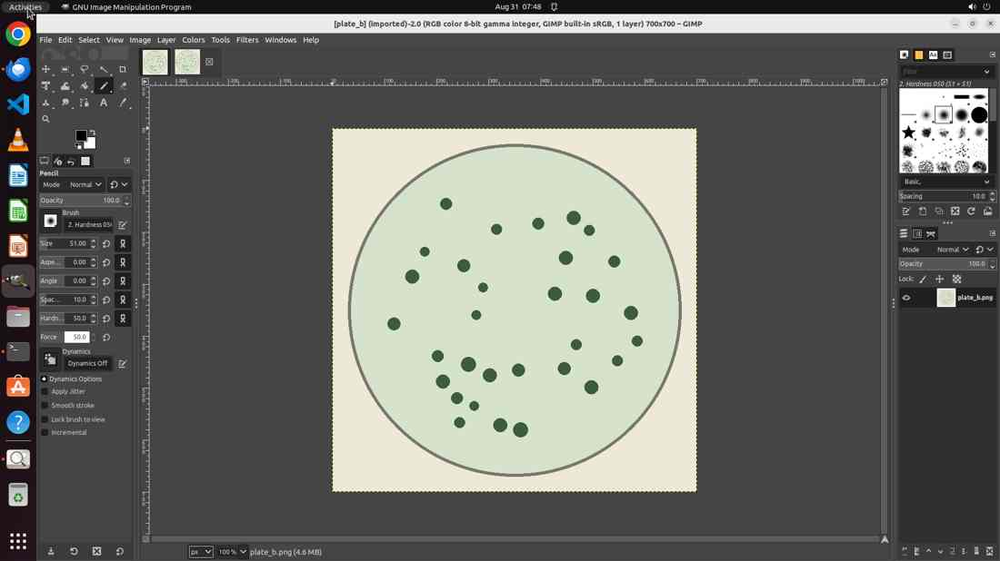
step 50 23:48:44
THINKINGPencil tool is now selected (tool options show "Pencil", Mode Normal, Opacity 100, Brush "2. Hardness 05", Size 51.0). Size 51 is large — that's too big; it would cover too much. Actually a 51px mark over a ~15px colony would be a big red blob. I want the mark clearly on the colony but distinguishable. A size ~25-35 would be good — a red dot clearly bigger than the colony but not enormous. Let me set size to about 30.
Let me set the Size field to 30. I'll triple-click the Size field (at ~100,311) and type 30.
Then set the foreground color to red. The foreground swatch is the black square at (101,175). Let me first set size, then color.
Let me set size to 30.
ACTIONPencil tool is selected with a brush size of 51, which is a bit large. Let me set the brush size to 30 for cleaner marks, then set the color to red.
TOOL CALL<tool_call>
<function=computer_use>
<parameter=action>
triple_click
</parameter>
<parameter=coordinate>
[75, 431]
</parameter>
</function>
</tool_call>
EXECUTED (pyautogui in VM)pyautogui.tripleClick(144, 465)